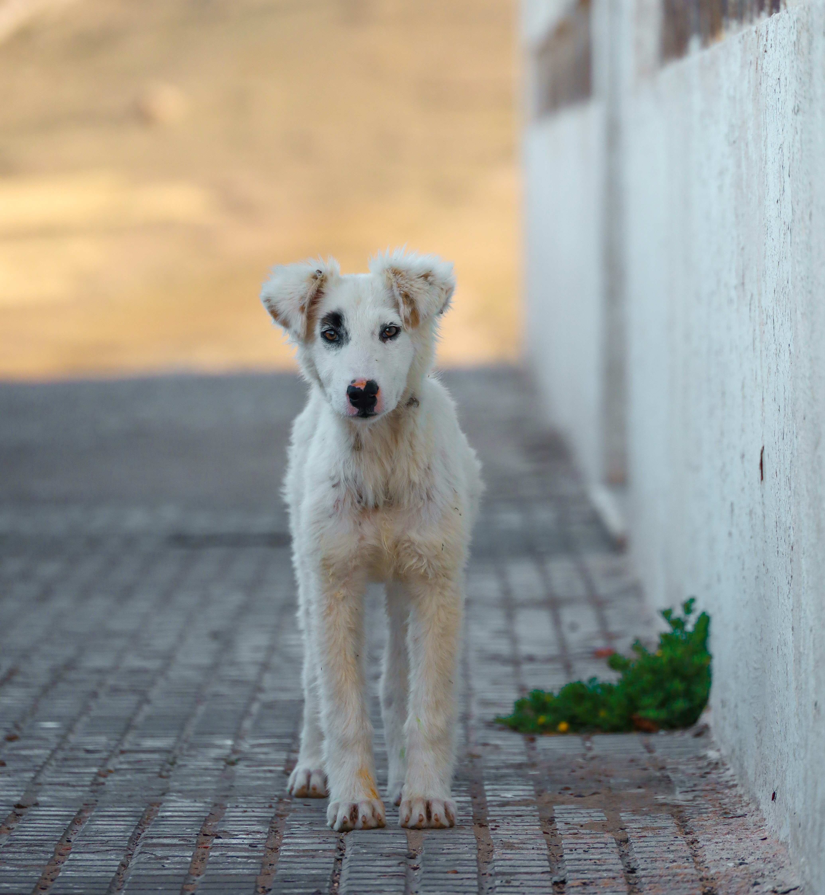
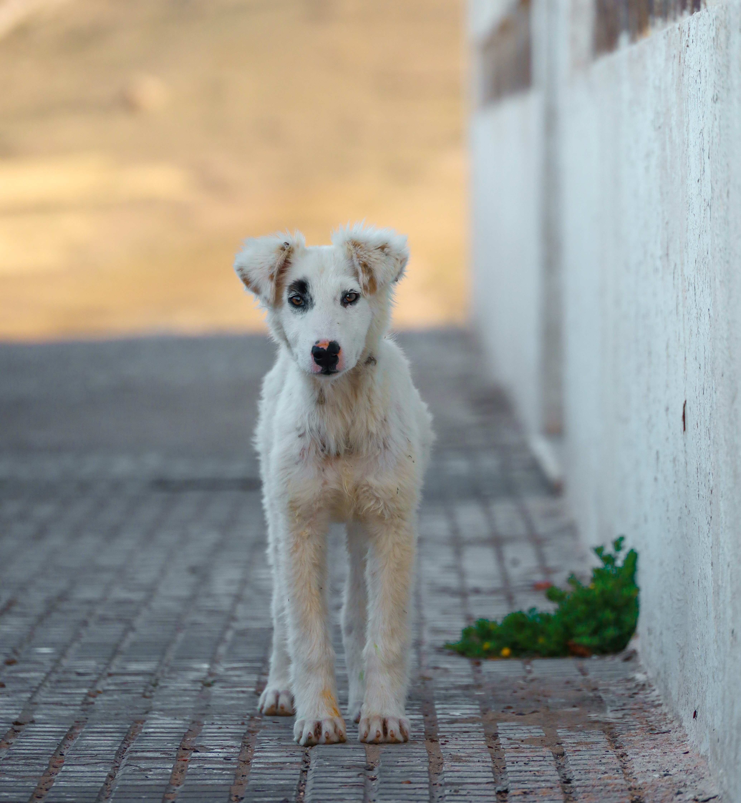

El refugio se encuentra ubicado en Buenos Aires. No recibe subsidios, ni aportes de ninguna empresa. Podés ayudarnos de manera voluntaria siendo padrino/madrina de algún animal en particular que desees ayudar. No hay un monto fijo, todo es a voluntad. También podes realizar visitas al refugio y pasar tiempo con nuestros amigos. En el refugio se realizan visitas guiadas y si querés ayudarnos podés venir a jugar con ellos y realizarles paseos.
Actualmente contamos con 30 organizadores y más de 80 voluntarios que cada fin de semana llegan al refugio para pasar tiempo con nuestros animales.
Sumate! te esperamos.
 
